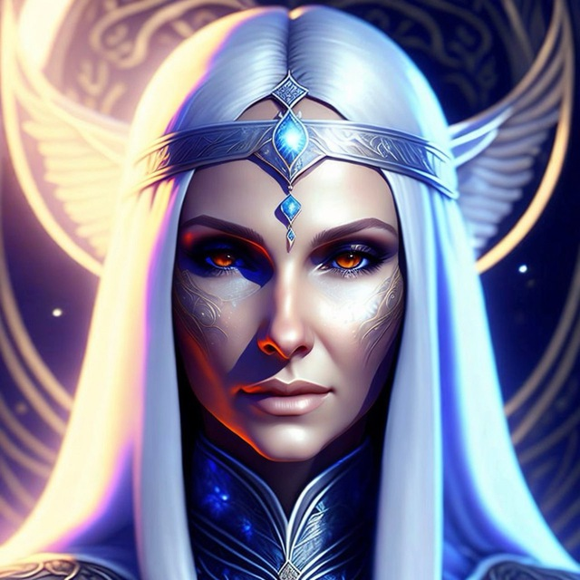

Персональные расклады и энергетические практики в формате конфиденциального личного диалога.
Выбрать услугуСформулируйте внутренний запрос и коснитесь карты, чтобы получить персональный вектор и подсказку на сегодня.
Ваша карта на сегодня уже открыта. Новая карта будет доступна завтра.

В своей работе я объединяю аналитический подход тарологии и глубинную работу с практиками очищения. Моя задача — помочь вам обрести ясность в сложных ситуациях и вернуть внутреннюю опору.
Работа строится без запугивания и шаблонных трактовок. Каждая сессия — это деликатный разбор вашей индивидуальной истории.
Быстрый и точный ответ на 1–2 конкретных вопроса: выбор решения, текущее состояние дел или совет карт.
Детальный разбор сложной ситуации или конкретной сферы жизни (отношения, карьера, кризис). Анализ причин и перспектив.
Комплексный формат: персональный разбор вашего запроса в режиме реального времени и последующая энергетическая чистка.
Практика нейтрализации негативных воздействий, снятия тяжелых состояний и восстановления сил на расстоянии.
«Юля обладает невероятной проницательностью. Разбор помог мне увидеть ситуацию под совершенно другим углом и найти решение, которое я не замечала долгое время.»
«После сессии и практики наступило такое глубокое внутреннее облегчение и ясность. Огромная благодарность за бережный подход и профессионализм.»